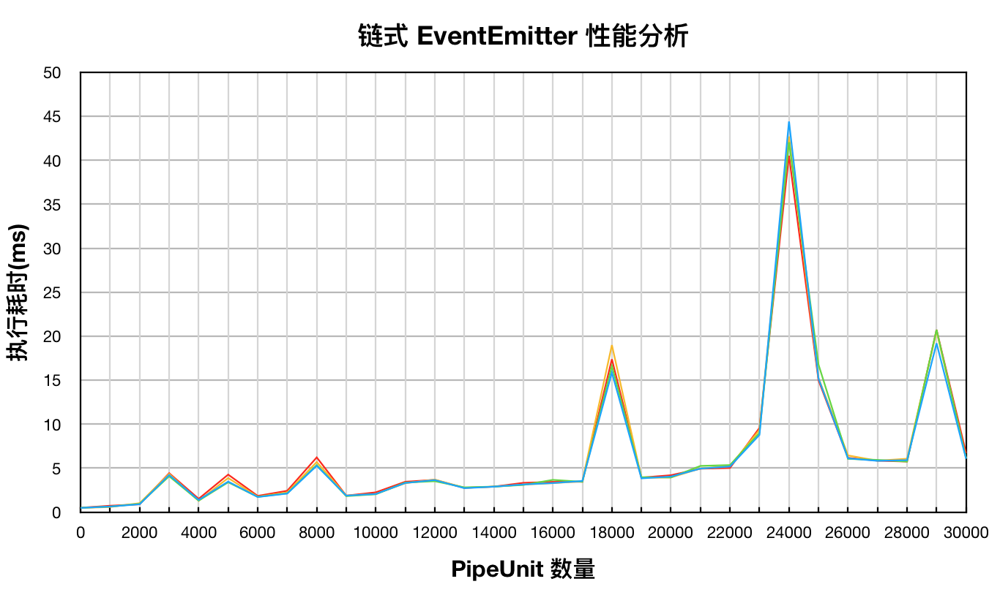

<!DOCTYPE html><html class="theme-next pisces" lang="en"><head><meta charset="UTF-8"><meta http-equiv="X-UA-Compatible" content="IE=edge"><meta name="viewport" content="width=device-width,initial-scale=1,maximum-scale=2"><meta name="theme-color" content="#222"><meta http-equiv="Cache-Control" content="no-transform"><meta http-equiv="Cache-Control" content="no-siteapp"><link href="/lib/font-awesome/css/font-awesome.min.css?v=4.6.2" rel="stylesheet" type="text/css"><link href="/css/main.css?v=6.1.0" rel="stylesheet" type="text/css"><link rel="apple-touch-icon" sizes="180x180" href="/uploads/apple-touch-icon.png?v=6.1.0"><link rel="icon" type="image/png" sizes="32x32" href="/uploads/favicon-32x32.png?v=6.1.0"><link rel="icon" type="image/png" sizes="16x16" href="/uploads/favicon-16x16.png?v=6.1.0"><link rel="mask-icon" href="/uploads/logo.svg?v=6.1.0" color="#222"><script type="text/javascript" id="hexo.configurations">var NexT=window.NexT||{},CONFIG={root:"/",scheme:"Pisces",version:"6.1.0",sidebar:{position:"left",display:"post",offset:12,b2t:!1,scrollpercent:!0,onmobile:!1},fancybox:!1,fastclick:!1,lazyload:!1,tabs:!0,motion:{enable:!1,async:!1,transition:{post_block:"fadeIn",post_header:"slideDownIn",post_body:"slideDownIn",coll_header:"slideLeftIn",sidebar:"slideUpIn"}},algolia:{applicationID:"",apiKey:"",indexName:"",hits:{per_page:10},labels:{input_placeholder:"Search for Posts",hits_empty:"We didn't find any results for the search: ${query}",hits_stats:"${hits} results found in ${time} ms"}}}</script><meta name="description" content="基于 EventEmitter 的双向数据 pipeline 实现想法来源GulpGulp 是前端工具链中常用的流式任务执行器，适用于许多小型库的编译打包任务。它的设计思想其实很像 Linux 命令行里面的 Pipe（管道）：12345gulp.src(paths.scripts.src, &amp;#123; sourcemaps: true &amp;#125;)    .pipe(babel()"><meta name="keywords" content="tech,eventemitter,nodejs,pipeline"><meta property="og:type" content="article"><meta property="og:title" content="基于 EventEmitter 的双向数据 pipeline 实现"><meta property="og:url" content="https://apporz.com/2018/04/14/implement-eventemitter-pipline/index.html"><meta property="og:site_name" content="Micooz"><meta property="og:description" content="基于 EventEmitter 的双向数据 pipeline 实现想法来源GulpGulp 是前端工具链中常用的流式任务执行器，适用于许多小型库的编译打包任务。它的设计思想其实很像 Linux 命令行里面的 Pipe（管道）：12345gulp.src(paths.scripts.src, &amp;#123; sourcemaps: true &amp;#125;)    .pipe(babel()"><meta property="og:locale" content="en"><meta property="og:image" content="https://apporz.com/2018/04/14/implement-eventemitter-pipline/performance.png"><meta property="og:updated_time" content="2018-04-13T12:14:00.523Z"><meta name="twitter:card" content="summary"><meta name="twitter:title" content="基于 EventEmitter 的双向数据 pipeline 实现"><meta name="twitter:description" content="基于 EventEmitter 的双向数据 pipeline 实现想法来源GulpGulp 是前端工具链中常用的流式任务执行器，适用于许多小型库的编译打包任务。它的设计思想其实很像 Linux 命令行里面的 Pipe（管道）：12345gulp.src(paths.scripts.src, &amp;#123; sourcemaps: true &amp;#125;)    .pipe(babel()"><meta name="twitter:image" content="https://apporz.com/2018/04/14/implement-eventemitter-pipline/performance.png"><link rel="alternate" href="/atom.xml" title="Micooz" type="application/atom+xml"><link rel="canonical" href="https://apporz.com/2018/04/14/implement-eventemitter-pipline/"><script type="text/javascript" id="page.configurations">CONFIG.page={sidebar:""}</script><title>基于 EventEmitter 的双向数据 pipeline 实现 | Micooz</title><script async src="https://www.googletagmanager.com/gtag/js?id=UA-72182315-1"></script><script>function gtag(){dataLayer.push(arguments)}window.dataLayer=window.dataLayer||[],gtag("js",new Date),gtag("config","UA-72182315-1")</script><noscript><style type="text/css">.sidebar-inner,.use-motion .brand,.use-motion .collection-title,.use-motion .comments,.use-motion .menu-item,.use-motion .motion-element,.use-motion .pagination,.use-motion .post-block,.use-motion .post-body,.use-motion .post-header{opacity:initial}.use-motion .logo,.use-motion .site-subtitle,.use-motion .site-title{opacity:initial;top:initial}.logo-line-after i{right:initial}</style></noscript></head><body itemscope itemtype="http://schema.org/WebPage" lang="en"><div class="container sidebar-position-left page-post-detail"><div class="headband"></div><header id="header" class="header" itemscope itemtype="http://schema.org/WPHeader"><div class="header-inner"><div class="site-brand-wrapper"><div class="site-meta"><div class="custom-logo-site-title"><a href="/" class="brand" rel="start"><span class="logo-line-before"><i></i></span> <span class="site-title">Micooz</span> <span class="logo-line-after"><i></i></span></a></div><p class="site-subtitle">Make something different!</p></div><div class="site-nav-toggle"><button aria-label="Toggle navigation bar"><span class="btn-bar"></span> <span class="btn-bar"></span> <span class="btn-bar"></span></button></div></div><nav class="site-nav"><ul id="menu" class="menu"><li class="menu-item menu-item-home"><a href="/" rel="section"><i class="menu-item-icon fa fa-fw fa-home"></i><br>Home</a></li><li class="menu-item menu-item-about"><a href="/about/" rel="section"><i class="menu-item-icon fa fa-fw fa-user"></i><br>About</a></li><li class="menu-item menu-item-tags"><a href="/tags/" rel="section"><i class="menu-item-icon fa fa-fw fa-tags"></i><br>Tags</a></li><li class="menu-item menu-item-archives"><a href="/archives/" rel="section"><i class="menu-item-icon fa fa-fw fa-archive"></i><br>Archives</a></li><li class="menu-item menu-item-search"><a href="javascript:;" class="popup-trigger"><i class="menu-item-icon fa fa-search fa-fw"></i><br>Search</a></li></ul><div class="site-search"><div class="popup search-popup local-search-popup"><div class="local-search-header clearfix"><span class="search-icon"><i class="fa fa-search"></i> </span><span class="popup-btn-close"><i class="fa fa-times-circle"></i></span><div class="local-search-input-wrapper"><input autocomplete="off" placeholder="Searching..." spellcheck="false" type="text" id="local-search-input"></div></div><div id="local-search-result"></div></div></div></nav></div></header><main id="main" class="main"><div class="main-inner"><div class="content-wrap"><div id="content" class="content"><div id="posts" class="posts-expand"><article class="post post-type-normal" itemscope itemtype="http://schema.org/Article"><div class="post-block"><link itemprop="mainEntityOfPage" href="https://apporz.com/2018/04/14/implement-eventemitter-pipline/"><span hidden itemprop="author" itemscope itemtype="http://schema.org/Person"><meta itemprop="name" content="Micooz Lee"><meta itemprop="description" content=""><meta itemprop="image" content="/uploads/master.portrait.png"></span><span hidden itemprop="publisher" itemscope itemtype="http://schema.org/Organization"><meta itemprop="name" content="Micooz"></span><header class="post-header"><h1 class="post-title" itemprop="name headline">基于 EventEmitter 的双向数据 pipeline 实现</h1><div class="post-meta"><span class="post-time"><span class="post-meta-item-icon"><i class="fa fa-calendar-o"></i> </span><span class="post-meta-item-text">Posted on</span> <time title="Post created" itemprop="dateCreated datePublished" datetime="2018-04-14T16:30:00+08:00">2018-04-14</time> </span><span class="post-comments-count"><span class="post-meta-divider">|</span> <span class="post-meta-item-icon"><i class="fa fa-comment-o"></i> </span><a href="/2018/04/14/implement-eventemitter-pipline/#comments" itemprop="discussionUrl"><span class="post-comments-count disqus-comment-count" data-disqus-identifier="2018/04/14/implement-eventemitter-pipline/" itemprop="commentCount"></span></a></span></div></header><div class="post-body" itemprop="articleBody"><h1 id="基于-EventEmitter-的双向数据-pipeline-实现"><a href="#基于-EventEmitter-的双向数据-pipeline-实现" class="headerlink" title="基于 EventEmitter 的双向数据 pipeline 实现"></a>基于 EventEmitter 的双向数据 pipeline 实现</h1><h2 id="想法来源"><a href="#想法来源" class="headerlink" title="想法来源"></a>想法来源</h2><h2 id="Gulp"><a href="#Gulp" class="headerlink" title="Gulp"></a>Gulp</h2><p>Gulp 是前端工具链中常用的流式任务执行器，适用于许多小型库的编译打包任务。它的设计思想其实很像 Linux 命令行里面的 Pipe（管道）：</p><figure class="highlight js"><table><tr><td class="gutter"><pre><span class="line">1</span><br><span class="line">2</span><br><span class="line">3</span><br><span class="line">4</span><br><span class="line">5</span><br></pre></td><td class="code"><pre><span class="line">gulp.src(paths.scripts.src, &#123; <span class="attr">sourcemaps</span>: <span class="literal">true</span> &#125;)</span><br><span class="line">    .pipe(babel())</span><br><span class="line">    .pipe(uglify())</span><br><span class="line">    .pipe(concat(<span class="string">'main.min.js'</span>))</span><br><span class="line">    .pipe(gulp.dest(paths.scripts.dest));</span><br></pre></td></tr></table></figure>
<p>gulp 是单向的，即对于同一个 pipeline，数据一般不能被逆向还原。</p>
<h2 id="TCP-IP-stack"><a href="#TCP-IP-stack" class="headerlink" title="TCP/IP stack"></a>TCP/IP stack</h2><p>我们知道，计算机网络协议是<strong>分层设计</strong>的，每层分别为数据赋予不同的含义、完成不同的使命。源主机采用网络协议栈将原始二进制流 <strong>层层编码（encode）</strong> 后送往目的主机，目的主机采用同样的协议栈将数据 <strong>层层解码（decode）</strong> 后得到原始数据。典型的 HTTP 协议将请求数据通过 TCP/IP 协议栈自上而下编码后送出，之后自下而上解码后得到响应数据：</p>
<figure class="highlight plain"><table><tr><td class="gutter"><pre><span class="line">1</span><br><span class="line">2</span><br><span class="line">3</span><br><span class="line">4</span><br><span class="line">5</span><br><span class="line">6</span><br><span class="line">7</span><br><span class="line">8</span><br><span class="line">9</span><br><span class="line">10</span><br><span class="line">11</span><br><span class="line">12</span><br><span class="line">13</span><br><span class="line">14</span><br><span class="line">15</span><br></pre></td><td class="code"><pre><span class="line">                                                      +---------+</span><br><span class="line">                                                      | &quot;Hello&quot; |</span><br><span class="line">                                                      +---------+</span><br><span class="line">                                        +-------------+---------+</span><br><span class="line">                                        | HTTP header | PAYLOAD |</span><br><span class="line">                                        +-------------+---------+   </span><br><span class="line">                           +------------+-----------------------+</span><br><span class="line">                           | TCP header |         PAYLOAD       |</span><br><span class="line">                           +------------+-----------------------+</span><br><span class="line">              +------------+------------------------------------+</span><br><span class="line">              | IP header  |              PAYLOAD               |</span><br><span class="line">              +------------+------------------------------------+</span><br><span class="line">+------------+--------------------------------------------------+</span><br><span class="line">| Eth header |                      PAYLOAD                     |</span><br><span class="line">+------------+--------------------------------------------------+</span><br></pre></td></tr></table></figure>
<p>TCP/IP 协议栈是双向的，即对于同一套协议，数据既可以被编码也可以被解码。</p>
<p>那么问题来了，是否可以抽象一种轻量的 Pipeline，实现类似网络协议栈双向数据流的处理能力，并且能够让用户定制化每层的处理逻辑？</p>
<h2 id="数据流"><a href="#数据流" class="headerlink" title="数据流"></a>数据流</h2><p>设计之前，先根据数据流划分功能模块，这里 <code>PIPE</code> 是数据和各个数据处理单元的调度者，<code>PIPE_UNIT_x</code> 是每层数据的处理单元，可以有多个，并且按顺序前后<strong>串联</strong>。</p>
<figure class="highlight plain"><table><tr><td class="gutter"><pre><span class="line">1</span><br><span class="line">2</span><br><span class="line">3</span><br></pre></td><td class="code"><pre><span class="line">                +------------------ PIPE -------------------+</span><br><span class="line">[RAW_DATA] &lt;==&gt; | [PIPE_UNIT_1] &lt;==&gt; ... &lt;==&gt; [PIPE_UNIT_2] | &lt;==&gt; [ENCODED_DATA]</span><br><span class="line">                +-------------------------------------------+</span><br></pre></td></tr></table></figure>
<p>用户可以实现自己的 <code>PIPE_UNIT</code> 来达到定制化处理逻辑的功能，也可以任意调换 <code>PIPE_UNIT</code> 的顺序来达到不同的处理效果。</p>
<h2 id="Pipe-设计"><a href="#Pipe-设计" class="headerlink" title="Pipe 设计"></a>Pipe 设计</h2><p><code>Pipe</code> 需要提供一个数据入口来启动链式处理流程：</p>
<figure class="highlight js"><table><tr><td class="gutter"><pre><span class="line">1</span><br><span class="line">2</span><br><span class="line">3</span><br><span class="line">4</span><br><span class="line">5</span><br><span class="line">6</span><br><span class="line">7</span><br><span class="line">8</span><br><span class="line">9</span><br><span class="line">10</span><br><span class="line">11</span><br><span class="line">12</span><br><span class="line">13</span><br><span class="line">14</span><br><span class="line">15</span><br><span class="line">16</span><br><span class="line">17</span><br><span class="line">18</span><br><span class="line">19</span><br><span class="line">20</span><br><span class="line">21</span><br><span class="line">22</span><br><span class="line">23</span><br><span class="line">24</span><br><span class="line">25</span><br><span class="line">26</span><br><span class="line">27</span><br><span class="line">28</span><br><span class="line">29</span><br><span class="line">30</span><br><span class="line">31</span><br><span class="line">32</span><br><span class="line">33</span><br><span class="line">34</span><br><span class="line">35</span><br><span class="line">36</span><br><span class="line">37</span><br></pre></td><td class="code"><pre><span class="line"><span class="keyword">const</span> EventEmitter = <span class="built_in">require</span>(<span class="string">'events'</span>);</span><br><span class="line"></span><br><span class="line"><span class="keyword">const</span> PIPE_TYPE_ENCODE = <span class="string">'PIPE_TYPE_ENCODE'</span>;</span><br><span class="line"><span class="keyword">const</span> PIPE_TYPE_DECODE = <span class="string">'PIPE_TYPE_DECODE'</span>;</span><br><span class="line"></span><br><span class="line"><span class="class"><span class="keyword">class</span> <span class="title">Pipe</span> <span class="keyword">extends</span> <span class="title">EventEmitter</span> </span>&#123;</span><br><span class="line"></span><br><span class="line">  <span class="comment">// 构造 Pipe 时，传入的处理单元数组约定为 encode 顺序</span></span><br><span class="line">  <span class="keyword">constructor</span>(units) &#123;</span><br><span class="line">    <span class="keyword">super</span>();</span><br><span class="line">    <span class="keyword">this</span>._encode_units = units;</span><br><span class="line">    <span class="keyword">this</span>._decode_units = [].concat(units).reverse();</span><br><span class="line">  &#125;</span><br><span class="line"></span><br><span class="line">  <span class="comment">// 数据处理入口</span></span><br><span class="line">  feed(type, data) &#123;</span><br><span class="line">    <span class="keyword">const</span> units = type === PIPE_TYPE_ENCODE ? <span class="keyword">this</span>._encode_units : <span class="keyword">this</span>._decode_units;</span><br><span class="line">    <span class="keyword">if</span> (units.length &lt; <span class="number">1</span>) &#123;</span><br><span class="line">      <span class="keyword">return</span>;</span><br><span class="line">    &#125;</span><br><span class="line">    <span class="keyword">const</span> first = units[<span class="number">0</span>];</span><br><span class="line">    <span class="keyword">if</span> (first.listenerCount(type) &lt; <span class="number">1</span>) &#123;</span><br><span class="line">      <span class="comment">// 构建链式响应逻辑</span></span><br><span class="line">      <span class="keyword">const</span> last = units.reduce(<span class="function">(<span class="params">prev, next</span>) =&gt;</span> &#123;</span><br><span class="line">        prev.on(type, (dt) =&gt; next._write(type, dt));</span><br><span class="line">        <span class="keyword">return</span> next;</span><br><span class="line">      &#125;);</span><br><span class="line">      last.on(type, (dt) =&gt; &#123;</span><br><span class="line">        <span class="comment">// 最后一个 unit 完成之后 feed 的任务就结束了</span></span><br><span class="line">        <span class="keyword">this</span>.emit(type, dt);</span><br><span class="line">      &#125;);</span><br><span class="line">    &#125;</span><br><span class="line">    <span class="comment">// 触发处理流程</span></span><br><span class="line">    first._write(type, data);</span><br><span class="line">  &#125;</span><br><span class="line"></span><br><span class="line">&#125;</span><br></pre></td></tr></table></figure>
<h2 id="PipeUnit-接口设计"><a href="#PipeUnit-接口设计" class="headerlink" title="PipeUnit 接口设计"></a>PipeUnit 接口设计</h2><p><code>PipeUnit</code> 需要暴露编码（encode）和解码（decode）两个接口，考虑到处理单元可能异步执行，因此使用 <code>async</code> 黑膜法：</p>
<figure class="highlight js"><table><tr><td class="gutter"><pre><span class="line">1</span><br><span class="line">2</span><br><span class="line">3</span><br><span class="line">4</span><br><span class="line">5</span><br><span class="line">6</span><br><span class="line">7</span><br><span class="line">8</span><br><span class="line">9</span><br><span class="line">10</span><br><span class="line">11</span><br><span class="line">12</span><br><span class="line">13</span><br><span class="line">14</span><br><span class="line">15</span><br><span class="line">16</span><br><span class="line">17</span><br><span class="line">18</span><br><span class="line">19</span><br><span class="line">20</span><br><span class="line">21</span><br></pre></td><td class="code"><pre><span class="line"><span class="class"><span class="keyword">class</span> <span class="title">PipeUnit</span> <span class="keyword">extends</span> <span class="title">EventEmitter</span> </span>&#123;</span><br><span class="line"></span><br><span class="line">  <span class="keyword">async</span> _write(type, data) &#123;</span><br><span class="line">    <span class="keyword">if</span> (type === PIPE_TYPE_ENCODE) &#123;</span><br><span class="line">      <span class="keyword">this</span>.emit(type, <span class="keyword">await</span> <span class="keyword">this</span>.encode(data));</span><br><span class="line">    &#125; <span class="keyword">else</span> &#123;</span><br><span class="line">      <span class="keyword">this</span>.emit(type, <span class="keyword">await</span> <span class="keyword">this</span>.decode(data));</span><br><span class="line">    &#125;</span><br><span class="line">  &#125;</span><br><span class="line"></span><br><span class="line">  <span class="comment">// 编码接口</span></span><br><span class="line">  <span class="keyword">async</span> encode(data) &#123;</span><br><span class="line">    <span class="keyword">return</span> data;</span><br><span class="line">  &#125;</span><br><span class="line"></span><br><span class="line">  <span class="comment">// 解码接口</span></span><br><span class="line">  <span class="keyword">async</span> decode(data) &#123;</span><br><span class="line">    <span class="keyword">return</span> data;</span><br><span class="line">  &#125;</span><br><span class="line"></span><br><span class="line">&#125;</span><br></pre></td></tr></table></figure>
<h2 id="实现-PipeUnit"><a href="#实现-PipeUnit" class="headerlink" title="实现 PipeUnit"></a>实现 PipeUnit</h2><p>首先实现一个提供压缩、解压缩功能的 <code>PipeUnit</code>：</p>
<figure class="highlight js"><table><tr><td class="gutter"><pre><span class="line">1</span><br><span class="line">2</span><br><span class="line">3</span><br><span class="line">4</span><br><span class="line">5</span><br><span class="line">6</span><br><span class="line">7</span><br><span class="line">8</span><br><span class="line">9</span><br><span class="line">10</span><br><span class="line">11</span><br><span class="line">12</span><br><span class="line">13</span><br><span class="line">14</span><br><span class="line">15</span><br><span class="line">16</span><br><span class="line">17</span><br><span class="line">18</span><br><span class="line">19</span><br><span class="line">20</span><br><span class="line">21</span><br><span class="line">22</span><br><span class="line">23</span><br><span class="line">24</span><br><span class="line">25</span><br><span class="line">26</span><br><span class="line">27</span><br><span class="line">28</span><br><span class="line">29</span><br><span class="line">30</span><br><span class="line">31</span><br></pre></td><td class="code"><pre><span class="line"><span class="keyword">const</span> zlib = <span class="built_in">require</span>(<span class="string">'zlib'</span>);</span><br><span class="line"></span><br><span class="line"><span class="class"><span class="keyword">class</span> <span class="title">ZipPipeUnit</span> <span class="keyword">extends</span> <span class="title">PipeUnit</span> </span>&#123;</span><br><span class="line"></span><br><span class="line">  <span class="keyword">async</span> encode(data) &#123;</span><br><span class="line">    <span class="built_in">console</span>.log(<span class="string">'ZipPipeUnit::encode &lt;-'</span>, data);</span><br><span class="line">    <span class="keyword">return</span> <span class="keyword">new</span> <span class="built_in">Promise</span>(<span class="function">(<span class="params">resolve, reject</span>) =&gt;</span> &#123;</span><br><span class="line">      zlib.deflate(data, (err, buffer) =&gt; &#123;</span><br><span class="line">        <span class="keyword">if</span> (err) &#123;</span><br><span class="line">          reject(err);</span><br><span class="line">        &#125; <span class="keyword">else</span> &#123;</span><br><span class="line">          resolve(buffer);</span><br><span class="line">        &#125;</span><br><span class="line">      &#125;);</span><br><span class="line">    &#125;);</span><br><span class="line">  &#125;</span><br><span class="line"></span><br><span class="line">  <span class="keyword">async</span> decode(data) &#123;</span><br><span class="line">    <span class="built_in">console</span>.log(<span class="string">'ZipPipeUnit::decode &lt;-'</span>, data);</span><br><span class="line">    <span class="keyword">return</span> <span class="keyword">new</span> <span class="built_in">Promise</span>(<span class="function">(<span class="params">resolve, reject</span>) =&gt;</span> &#123;</span><br><span class="line">      zlib.unzip(data, (err, buffer) =&gt; &#123;</span><br><span class="line">        <span class="keyword">if</span> (err) &#123;</span><br><span class="line">          reject(err);</span><br><span class="line">        &#125; <span class="keyword">else</span> &#123;</span><br><span class="line">          resolve(buffer);</span><br><span class="line">        &#125;</span><br><span class="line">      &#125;);</span><br><span class="line">    &#125;);</span><br><span class="line">  &#125;</span><br><span class="line"></span><br><span class="line">&#125;</span><br></pre></td></tr></table></figure>
<p>下面再实现一个提供 <code>AES</code> 对称加解密功能的 <code>PipeUnit</code>，这次采用同步执行：</p>
<figure class="highlight js"><table><tr><td class="gutter"><pre><span class="line">1</span><br><span class="line">2</span><br><span class="line">3</span><br><span class="line">4</span><br><span class="line">5</span><br><span class="line">6</span><br><span class="line">7</span><br><span class="line">8</span><br><span class="line">9</span><br><span class="line">10</span><br><span class="line">11</span><br><span class="line">12</span><br><span class="line">13</span><br><span class="line">14</span><br><span class="line">15</span><br><span class="line">16</span><br><span class="line">17</span><br><span class="line">18</span><br><span class="line">19</span><br><span class="line">20</span><br><span class="line">21</span><br></pre></td><td class="code"><pre><span class="line"><span class="keyword">const</span> crypto = <span class="built_in">require</span>(<span class="string">'crypto'</span>);</span><br><span class="line"></span><br><span class="line"><span class="class"><span class="keyword">class</span> <span class="title">CryptoPipeUnit</span> <span class="keyword">extends</span> <span class="title">PipeUnit</span> </span>&#123;</span><br><span class="line"></span><br><span class="line">  <span class="comment">// 编码实现</span></span><br><span class="line">  encode(plaintext) &#123;</span><br><span class="line">    <span class="built_in">console</span>.log(<span class="string">'CryptoPipeUnit::encode &lt;-'</span>, plaintext);</span><br><span class="line">    <span class="keyword">const</span> cipher = crypto.createCipher(<span class="string">'aes192'</span>, <span class="string">'a password'</span>);</span><br><span class="line">    <span class="keyword">const</span> encrypted = cipher.update(plaintext);</span><br><span class="line">    <span class="keyword">return</span> Buffer.concat([encrypted, cipher.final()]);</span><br><span class="line">  &#125;</span><br><span class="line"></span><br><span class="line">  <span class="comment">// 解码实现</span></span><br><span class="line">  decode(ciphertext) &#123;</span><br><span class="line">    <span class="built_in">console</span>.log(<span class="string">'CryptoPipeUnit::decode &lt;-'</span>, ciphertext);</span><br><span class="line">    <span class="keyword">const</span> decipher = crypto.createDecipher(<span class="string">'aes192'</span>, <span class="string">'a password'</span>);</span><br><span class="line">    <span class="keyword">const</span> decrypted = decipher.update(ciphertext);</span><br><span class="line">    <span class="keyword">return</span> Buffer.concat([decrypted, decipher.final()]);</span><br><span class="line">  &#125;</span><br><span class="line"></span><br><span class="line">&#125;</span><br></pre></td></tr></table></figure>
<h2 id="实际运行"><a href="#实际运行" class="headerlink" title="实际运行"></a>实际运行</h2><figure class="highlight js"><table><tr><td class="gutter"><pre><span class="line">1</span><br><span class="line">2</span><br><span class="line">3</span><br><span class="line">4</span><br><span class="line">5</span><br><span class="line">6</span><br><span class="line">7</span><br><span class="line">8</span><br><span class="line">9</span><br><span class="line">10</span><br><span class="line">11</span><br><span class="line">12</span><br><span class="line">13</span><br><span class="line">14</span><br><span class="line">15</span><br><span class="line">16</span><br><span class="line">17</span><br><span class="line">18</span><br><span class="line">19</span><br><span class="line">20</span><br><span class="line">21</span><br><span class="line">22</span><br><span class="line">23</span><br><span class="line">24</span><br><span class="line">25</span><br><span class="line">26</span><br><span class="line">27</span><br><span class="line">28</span><br><span class="line">29</span><br></pre></td><td class="code"><pre><span class="line"><span class="comment">// 自由组合处理单元</span></span><br><span class="line"><span class="keyword">const</span> units = [</span><br><span class="line">  <span class="keyword">new</span> ZipPipeUnit(),</span><br><span class="line">  <span class="keyword">new</span> CryptoPipeUnit(),</span><br><span class="line">  <span class="comment">// new CryptoPipeUnit(), // 再来一个也可以</span></span><br><span class="line">];</span><br><span class="line"></span><br><span class="line"><span class="comment">// 来一个 pipe 对象</span></span><br><span class="line"><span class="keyword">const</span> pipe = <span class="keyword">new</span> Pipe(units);</span><br><span class="line"></span><br><span class="line">pipe.on(PIPE_TYPE_ENCODE, (data) =&gt; &#123;</span><br><span class="line">  <span class="built_in">console</span>.log(<span class="string">'encoded:'</span>, data);</span><br><span class="line">  <span class="built_in">console</span>.log(<span class="string">''</span>);</span><br><span class="line">  <span class="comment">// 解码</span></span><br><span class="line">  pipe.feed(PIPE_TYPE_DECODE, data);</span><br><span class="line">&#125;);</span><br><span class="line">pipe.on(PIPE_TYPE_DECODE, (data) =&gt; <span class="built_in">console</span>.log(<span class="string">'decoded:'</span>, data.toString()));</span><br><span class="line"></span><br><span class="line"><span class="comment">// 编码</span></span><br><span class="line">pipe.feed(PIPE_TYPE_ENCODE, Buffer.from(<span class="string">'awesome nodejs'</span>));</span><br><span class="line"></span><br><span class="line"><span class="comment">// 输出如下:</span></span><br><span class="line"><span class="comment">// ZipPipeUnit::encode &lt;- &lt;Buffer 61 77 65 73 6f 6d 65 20 6e 6f 64 65 6a 73&gt;</span></span><br><span class="line"><span class="comment">// CryptoPipeUnit::encode &lt;- &lt;Buffer 78 9c 4b 2c 4f 2d ce cf 4d 55 c8 cb 4f 49 cd 2a 06 00 2a 0c 05 95&gt;</span></span><br><span class="line"><span class="comment">// encoded: &lt;Buffer a9 61 bc 37 1a 4c 41 e8 20 63 d2 90 86 94 7b 48 98 b1 91 16 84 66 58 9b 6d 88 53 da 9b b9 18 fb&gt;</span></span><br><span class="line"></span><br><span class="line"><span class="comment">// CryptoPipeUnit::decode &lt;- &lt;Buffer a9 61 bc 37 1a 4c 41 e8 20 63 d2 90 86 94 7b 48 98 b1 91 16 84 66 58 9b 6d 88 53 da 9b b9 18 fb&gt;</span></span><br><span class="line"><span class="comment">// ZipPipeUnit::decode &lt;- &lt;Buffer 78 9c 4b 2c 4f 2d ce cf 4d 55 c8 cb 4f 49 cd 2a 06 00 2a 0c 05 95&gt;</span></span><br><span class="line"><span class="comment">// decoded: awesome nodejs</span></span><br></pre></td></tr></table></figure>
<p>可以看到，通过对 EventEmitter 简单的封装就可以实现双向数据 pipeline，同时支持异步单元操作。</p>
<h2 id="性能测试"><a href="#性能测试" class="headerlink" title="性能测试"></a>性能测试</h2><p>功能实现了，性能又如何呢？抛开 <code>PipeUnit</code> 的业务实现，简单分析一下链式 EventEmitter 结构的性能影响因素，理论上很大程度取决于 EventEmitter 本身的性能，<code>Pipe::feed</code> 只在第一次被调用时构建响应链，之后的调用几乎不会有性能损失。</p>
<h3 id="测试用例"><a href="#测试用例" class="headerlink" title="测试用例"></a>测试用例</h3><p>Node.js 版本如下：</p>
<figure class="highlight plain"><table><tr><td class="gutter"><pre><span class="line">1</span><br><span class="line">2</span><br><span class="line">3</span><br><span class="line">4</span><br><span class="line">5</span><br><span class="line">6</span><br><span class="line">7</span><br><span class="line">8</span><br><span class="line">9</span><br><span class="line">10</span><br><span class="line">11</span><br><span class="line">12</span><br><span class="line">13</span><br><span class="line">14</span><br><span class="line">15</span><br></pre></td><td class="code"><pre><span class="line">&gt; process.versions</span><br><span class="line">&#123; http_parser: &apos;2.8.0&apos;,</span><br><span class="line">  node: &apos;9.11.1&apos;,</span><br><span class="line">  v8: &apos;6.2.414.46-node.23&apos;,</span><br><span class="line">  uv: &apos;1.19.2&apos;,</span><br><span class="line">  zlib: &apos;1.2.11&apos;,</span><br><span class="line">  ares: &apos;1.13.0&apos;,</span><br><span class="line">  modules: &apos;59&apos;,</span><br><span class="line">  nghttp2: &apos;1.29.0&apos;,</span><br><span class="line">  napi: &apos;3&apos;,</span><br><span class="line">  openssl: &apos;1.0.2o&apos;,</span><br><span class="line">  icu: &apos;61.1&apos;,</span><br><span class="line">  unicode: &apos;10.0&apos;,</span><br><span class="line">  cldr: &apos;33.0&apos;,</span><br><span class="line">  tz: &apos;2018c&apos; &#125;</span><br></pre></td></tr></table></figure>
<p>下面分别考察 0 ~ 30000（每次递增 1000） 个 <code>PipeUnit</code> 实例的执行时间，来评估上述设计的性能表现：</p>
<figure class="highlight js"><table><tr><td class="gutter"><pre><span class="line">1</span><br><span class="line">2</span><br><span class="line">3</span><br><span class="line">4</span><br><span class="line">5</span><br><span class="line">6</span><br><span class="line">7</span><br><span class="line">8</span><br><span class="line">9</span><br><span class="line">10</span><br><span class="line">11</span><br><span class="line">12</span><br><span class="line">13</span><br><span class="line">14</span><br><span class="line">15</span><br><span class="line">16</span><br><span class="line">17</span><br><span class="line">18</span><br><span class="line">19</span><br><span class="line">20</span><br><span class="line">21</span><br><span class="line">22</span><br><span class="line">23</span><br><span class="line">24</span><br><span class="line">25</span><br></pre></td><td class="code"><pre><span class="line"><span class="keyword">const</span> &#123; performance &#125; = <span class="built_in">require</span>(<span class="string">'perf_hooks'</span>);</span><br><span class="line"></span><br><span class="line"><span class="keyword">const</span> payload = Buffer.alloc(<span class="number">4096</span>);</span><br><span class="line"></span><br><span class="line"><span class="keyword">for</span> (<span class="keyword">let</span> i = <span class="number">0</span>; i &lt;= <span class="number">30</span>; i++) &#123;</span><br><span class="line">  <span class="keyword">const</span> units = <span class="built_in">Array</span>(i * <span class="number">1000</span>).fill().map(<span class="function"><span class="params">()</span> =&gt;</span> <span class="keyword">new</span> PipeUnit());</span><br><span class="line"></span><br><span class="line">  performance.mark(<span class="string">'A_'</span> + i);</span><br><span class="line">  &#123;</span><br><span class="line">    <span class="keyword">const</span> pipe = <span class="keyword">new</span> Pipe(units);</span><br><span class="line">    pipe.on(PIPE_TYPE_ENCODE, (data) =&gt; &#123;</span><br><span class="line">      pipe.feed(PIPE_TYPE_DECODE, data);</span><br><span class="line">    &#125;);</span><br><span class="line">    pipe.on(PIPE_TYPE_DECODE, () =&gt; <span class="literal">null</span>);</span><br><span class="line">    pipe.feed(PIPE_TYPE_ENCODE, payload);</span><br><span class="line">  &#125;</span><br><span class="line">  performance.mark(<span class="string">'B_'</span> + i);</span><br><span class="line"></span><br><span class="line">  performance.measure(<span class="string">`<span class="subst">$&#123;units.length&#125;</span> units`</span>, <span class="string">'A_'</span> + i, <span class="string">'B_'</span> + i);</span><br><span class="line">&#125;</span><br><span class="line"></span><br><span class="line"><span class="keyword">const</span> entries = performance.getEntriesByType(<span class="string">'measure'</span>);</span><br><span class="line"><span class="keyword">for</span> (<span class="keyword">const</span> &#123; name, duration &#125; <span class="keyword">of</span> entries) &#123;</span><br><span class="line">  <span class="built_in">console</span>.log(<span class="string">`<span class="subst">$&#123;name&#125;</span>: <span class="subst">$&#123;duration&#125;</span>ms`</span>);</span><br><span class="line">&#125;</span><br></pre></td></tr></table></figure>
<p>执行4次，可以将结果绘制到一张图中：</p>
<p></p>
<p>可以看到每次运行的结果高度一致，由上万个 <code>PipeUnit</code> 构成的链式 EventEmitter 能够以令人满意的效率完成运行。</p>
<p>不过出人意料的是，在特定数量的 <code>PipeUnit</code> 上总会出现尖峰，这可能和 V8 引擎的优化机制有关，作者能力有限，感兴趣的同学可以深挖原因。</p>
      
    </div>

    

    
    
    

    

    

    
      <div>
        <ul class="post-copyright">
  <li class="post-copyright-author">
    <strong>Post author: </strong>Micooz Lee</li>
  <li class="post-copyright-link">
    <strong>Post link:</strong>
    <a href="https://apporz.com/2018/04/14/implement-eventemitter-pipline/" title="基于 EventEmitter 的双向数据 pipeline 实现">https://apporz.com/2018/04/14/implement-eventemitter-pipline/</a>
  </li>
  <li class="post-copyright-license">
    <strong>Copyright Notice: </strong>All articles in this blog are licensed under <a href="https://creativecommons.org/licenses/by-nc-sa/4.0/" rel="external nofollow" target="_blank">CC BY-NC-SA 4.0</a> unless stating additionally.</li>
</ul>

      </div>
    

    <footer class="post-footer">
      
        <div class="post-tags">
          
            <a href="/tags/tech/" rel="tag"># tech</a>
          
            <a href="/tags/eventemitter/" rel="tag"># eventemitter</a>
          
            <a href="/tags/nodejs/" rel="tag"># nodejs</a>
          
            <a href="/tags/pipeline/" rel="tag"># pipeline</a>
          
        </div>
      

      
      
      

      
        <div class="post-nav">
          <div class="post-nav-next post-nav-item">
            
              <a href="/2018/04/13/loading-webassembly-modules-efficiently/" rel="next" title="高效加载 WebAssembly 模块">
                <i class="fa fa-chevron-left"></i> 高效加载 WebAssembly 模块
              </a>
            
          </div>

          <span class="post-nav-divider"></span>

          <div class="post-nav-prev post-nav-item">
            
          </div>
        </div>
      

      
      
    </footer>
  </div>
  
  
  
  </article>


    <div class="post-spread">
      
    </div>
  </div>


          </div>
          

  
    <div class="comments" id="comments">
      <div id="disqus_thread">
        <noscript>
          Please enable JavaScript to view the
          <a href="https://disqus.com/?ref_noscript">comments powered by Disqus.</a>
        </noscript>
      </div>
    </div>

  


        </div>
        
          
  
  <div class="sidebar-toggle">
    <div class="sidebar-toggle-line-wrap">
      <span class="sidebar-toggle-line sidebar-toggle-line-first"></span>
      <span class="sidebar-toggle-line sidebar-toggle-line-middle"></span>
      <span class="sidebar-toggle-line sidebar-toggle-line-last"></span>
    </div>
  </div>

  <aside id="sidebar" class="sidebar">
    
    <div class="sidebar-inner">

      

      
        <ul class="sidebar-nav motion-element">
          <li class="sidebar-nav-toc sidebar-nav-active" data-target="post-toc-wrap">
            Table of Contents
          </li>
          <li class="sidebar-nav-overview" data-target="site-overview-wrap">
            Overview
          </li>
        </ul>
      

      <section class="site-overview-wrap sidebar-panel">
        <div class="site-overview">
          <div class="site-author motion-element" itemprop="author" itemscope itemtype="http://schema.org/Person">
            
              
            
              <p class="site-author-name" itemprop="name">Micooz Lee</p>
              <p class="site-description motion-element" itemprop="description">FullStack JavaScript Engineer</p>
          </div>

          
            <nav class="site-state motion-element">
              
                <div class="site-state-item site-state-posts">
                
                  <a href="/archives/">
                
                    <span class="site-state-item-count">50</span>
                    <span class="site-state-item-name">posts</span>
                  </a>
                </div>
              

              

              
                
                
                <div class="site-state-item site-state-tags">
                  <a href="/tags/index.html">
                    
                    
                      
                    
                      
                    
                      
                    
                      
                    
                      
                    
                      
                    
                      
                    
                      
                    
                      
                    
                      
                    
                      
                    
                      
                    
                      
                    
                      
                    
                      
                    
                      
                    
                      
                    
                    <span class="site-state-item-count">17</span>
                    <span class="site-state-item-name">tags</span>
                  </a>
                </div>
              
            </nav>
          

          
            <div class="feed-link motion-element">
              <a href="/atom.xml" rel="alternate">
                <i class="fa fa-rss"></i>
                RSS
              </a>
            </div>
          

          
            <div class="links-of-author motion-element">
              
                <span class="links-of-author-item">
                  <a href="https://github.com/micooz" target="_blank" title="GitHub"><i class="fa fa-fw fa-github"></i>GitHub</a>
                  
                </span>
              
                <span class="links-of-author-item">
                  <a href="mailto:micooz@hotmail.com" target="_blank" title="E-Mail"><i class="fa fa-fw fa-envelope"></i>E-Mail</a>
                  
                </span>
              
                <span class="links-of-author-item">
                  <a href="https://twitter.com/MicoozLee" target="_blank" title="Twitter"><i class="fa fa-fw fa-twitter"></i>Twitter</a>
                  
                </span>
              
                <span class="links-of-author-item">
                  <a href="https://instagram.com/micoozlee" target="_blank" title="Instagram"><i class="fa fa-fw fa-instagram"></i>Instagram</a>
                  
                </span>
              
            </div>
          

          
          

          
          
            <div class="links-of-blogroll motion-element links-of-blogroll-block">
              <div class="links-of-blogroll-title">
                <i class="fa fa-fw fa-link"></i>
                Links
              </div>
              <ul class="links-of-blogroll-list">
                
                  <li class="links-of-blogroll-item">
                    <a href="http://flag.moe" title="哞菇菌" target="_blank">哞菇菌</a>
                  </li>
                
                  <li class="links-of-blogroll-item">
                    <a href="http://haipz.com" title="海胖博客" target="_blank">海胖博客</a>
                  </li>
                
                  <li class="links-of-blogroll-item">
                    <a href="http://www.otokaze.cn" title="音風の部屋" target="_blank">音風の部屋</a>
                  </li>
                
                  <li class="links-of-blogroll-item">
                    <a href="https://www.anotherhome.net" title="DIYgod" target="_blank">DIYgod</a>
                  </li>
                
                  <li class="links-of-blogroll-item">
                    <a href="https://blog.0xbbc.com" title="BlueCocoa" target="_blank">BlueCocoa</a>
                  </li>
                
                  <li class="links-of-blogroll-item">
                    <a href="https://windisco.com" title="ShinCurry" target="_blank">ShinCurry</a>
                  </li>
                
                  <li class="links-of-blogroll-item">
                    <a href="http://codelover.link" title="codelover" target="_blank">codelover</a>
                  </li>
                
                  <li class="links-of-blogroll-item">
                    <a href="https://blog.chionlab.moe" title="ChionTang" target="_blank">ChionTang</a>
                  </li>
                
                  <li class="links-of-blogroll-item">
                    <a href="http://rakume.com/#!/home" title="Rakume Hayashi" target="_blank">Rakume Hayashi</a>
                  </li>
                
                  <li class="links-of-blogroll-item">
                    <a href="https://src.moe" title="POJO" target="_blank">POJO</a>
                  </li>
                
              </ul>
            </div>
          

          
            
          
          

        </div>
      </section>

      
      
        <section class="post-toc-wrap motion-element sidebar-panel sidebar-panel-active">
          <div class="post-toc">

            
              
            

            
              <div class="post-toc-content"><ol class="nav"><li class="nav-item nav-level-1"><a class="nav-link" href="#基于-EventEmitter-的双向数据-pipeline-实现"><span class="nav-number">1.</span> <span class="nav-text">基于 EventEmitter 的双向数据 pipeline 实现</span></a><ol class="nav-child"><li class="nav-item nav-level-2"><a class="nav-link" href="#想法来源"><span class="nav-number">1.1.</span> <span class="nav-text">想法来源</span></a></li><li class="nav-item nav-level-2"><a class="nav-link" href="#Gulp"><span class="nav-number">1.2.</span> <span class="nav-text">Gulp</span></a></li><li class="nav-item nav-level-2"><a class="nav-link" href="#TCP-IP-stack"><span class="nav-number">1.3.</span> <span class="nav-text">TCP/IP stack</span></a></li><li class="nav-item nav-level-2"><a class="nav-link" href="#数据流"><span class="nav-number">1.4.</span> <span class="nav-text">数据流</span></a></li><li class="nav-item nav-level-2"><a class="nav-link" href="#Pipe-设计"><span class="nav-number">1.5.</span> <span class="nav-text">Pipe 设计</span></a></li><li class="nav-item nav-level-2"><a class="nav-link" href="#PipeUnit-接口设计"><span class="nav-number">1.6.</span> <span class="nav-text">PipeUnit 接口设计</span></a></li><li class="nav-item nav-level-2"><a class="nav-link" href="#实现-PipeUnit"><span class="nav-number">1.7.</span> <span class="nav-text">实现 PipeUnit</span></a></li><li class="nav-item nav-level-2"><a class="nav-link" href="#实际运行"><span class="nav-number">1.8.</span> <span class="nav-text">实际运行</span></a></li><li class="nav-item nav-level-2"><a class="nav-link" href="#性能测试"><span class="nav-number">1.9.</span> <span class="nav-text">性能测试</span></a><ol class="nav-child"><li class="nav-item nav-level-3"><a class="nav-link" href="#测试用例"><span class="nav-number">1.9.1.</span> <span class="nav-text">测试用例</span></a></li></ol></li></ol></li></ol></div>
            

          </div>
        </section>
      
      

      

    </div>
  </aside>


        
      </div>
    </main>

    <footer id="footer" class="footer">
      <div class="footer-inner">
        <div class="copyright">&copy; <span itemprop="copyrightYear">2018</span> <span class="with-love" id="animate"><i class="fa fa-user"></i> </span><span class="author" itemprop="copyrightHolder">Micooz Lee</span></div><div class="powered-by">Powered by <a class="theme-link" target="_blank" href="https://hexo.io">Hexo</a> v3.7.1</div><span class="post-meta-divider">|</span><div class="theme-info">Theme &mdash; <a class="theme-link" target="_blank" href="https://github.com/theme-next/hexo-theme-next">NexT.Pisces</a> v6.1.0</div>
        


        
      </div>
    </footer>

    
      <div class="back-to-top">
        <i class="fa fa-arrow-up"></i>
        
          <span id="scrollpercent"><span>0</span>%</span>
        
      </div>
    

    

  </div>

  

<script type="text/javascript">"[object Function]"!==Object.prototype.toString.call(window.Promise)&&(window.Promise=null)</script>


  
  
    <script type="text/javascript" src="/lib/jquery/index.js?v=2.1.3"></script>
  

  
  
    <script type="text/javascript" src="/lib/velocity/velocity.min.js?v=1.2.1"></script>
  

  
  
    <script type="text/javascript" src="/lib/velocity/velocity.ui.min.js?v=1.2.1"></script>
  


  


  <script type="text/javascript" src="/js/src/utils.js?v=6.1.0"></script>

  <script type="text/javascript" src="/js/src/motion.js?v=6.1.0"></script>


  
  


  <script type="text/javascript" src="/js/src/affix.js?v=6.1.0"></script>

  <script type="text/javascript" src="/js/src/schemes/pisces.js?v=6.1.0"></script>


  
  <script type="text/javascript" src="/js/src/scrollspy.js?v=6.1.0"></script>
<script type="text/javascript" src="/js/src/post-details.js?v=6.1.0"></script>


  


  <script type="text/javascript" src="/js/src/bootstrap.js?v=6.1.0"></script>


  

  
    <script id="dsq-count-scr" src="https://micooz.disqus.com/count.js" async></script>
  

  
    <script type="text/javascript">function loadComments(){var e=document,t=e.createElement("script");t.src="https://micooz.disqus.com/embed.js",t.setAttribute("data-timestamp",""+ +new Date),(e.head||e.body).appendChild(t)}var disqus_config=function(){this.page.url="https://apporz.com/2018/04/14/implement-eventemitter-pipline/",this.page.identifier="2018/04/14/implement-eventemitter-pipline/",this.page.title="基于 EventEmitter 的双向数据 pipeline 实现"};loadComments()</script>
  


	


  


  

  <script type="text/javascript">function proceedsearch(){$("body").append('<div class="search-popup-overlay local-search-pop-overlay"></div>').css("overflow","hidden"),$(".search-popup-overlay").click(onPopupClose),$(".popup").toggle();var t=$("#local-search-input");t.attr("autocapitalize","none"),t.attr("autocorrect","off"),t.focus()}var isfetched=!1,isXml=!0,search_path="search.xml";0===search_path.length?search_path="search.xml":/json$/i.test(search_path)&&(isXml=!1);var path="/"+search_path,onPopupClose=function(t){$(".popup").hide(),$("#local-search-input").val(""),$(".search-result-list").remove(),$("#no-result").remove(),$(".local-search-pop-overlay").remove(),$("body").css("overflow","")},searchFunc=function(t,e,o){"use strict";$("body").append('<div class="search-popup-overlay local-search-pop-overlay"><div id="search-loading-icon"><i class="fa fa-spinner fa-pulse fa-5x fa-fw"></i></div></div>').css("overflow","hidden"),$("#search-loading-icon").css("margin","20% auto 0 auto").css("text-align","center"),$.ajax({url:t,dataType:isXml?"xml":"json",async:!0,success:function(t){isfetched=!0,$(".popup").detach().appendTo(".header-inner");var n=isXml?$("entry",t).map(function(){return{title:$("title",this).text(),content:$("content",this).text(),url:$("url",this).text()}}).get():t,r=document.getElementById(e),s=document.getElementById(o),a=function(){var t=r.value.trim().toLowerCase(),e=t.split(/[\s\-]+/);e.length>1&&e.push(t);var o=[];if(t.length>0&&n.forEach(function(n){var r=!1,s=0,a=0,i=n.title.trim(),c=i.toLowerCase(),l=n.content.trim().replace(/<[^>]+>/g,""),h=l.toLowerCase(),p=decodeURIComponent(n.url),u=[],f=[];if(""!=i&&(e.forEach(function(t){function e(t,e,o){var n=t.length;if(0===n)return[];var r=0,s=[],a=[];for(o||(e=e.toLowerCase(),t=t.toLowerCase());(s=e.indexOf(t,r))>-1;)a.push({position:s,word:t}),r=s+n;return a}u=u.concat(e(t,c,!1)),f=f.concat(e(t,h,!1))}),(u.length>0||f.length>0)&&(r=!0,s=u.length+f.length)),r){[u,f].forEach(function(t){t.sort(function(t,e){return e.position!==t.position?e.position-t.position:t.word.length-e.word.length})});function d(e,o,n,r){for(var s=r[r.length-1],i=s.position,c=s.word,l=[],h=0;i+c.length<=n&&0!=r.length;){c===t&&h++,l.push({position:i,length:c.length});var p=i+c.length;for(r.pop();0!=r.length&&(s=r[r.length-1],i=s.position,c=s.word,p>i);)r.pop()}return a+=h,{hits:l,start:o,end:n,searchTextCount:h}}var g=[];0!=u.length&&g.push(d(0,0,i.length,u));for(var v=[];0!=f.length;){var $=f[f.length-1],C=$.position,m=$.word,x=C-20,w=C+80;x<0&&(x=0),w<C+m.length&&(w=C+m.length),w>l.length&&(w=l.length),v.push(d(0,x,w,f))}v.sort(function(t,e){return t.searchTextCount!==e.searchTextCount?e.searchTextCount-t.searchTextCount:t.hits.length!==e.hits.length?e.hits.length-t.hits.length:t.start-e.start});var y=parseInt("1");y>=0&&(v=v.slice(0,y));function T(t,e){var o="",n=e.start;return e.hits.forEach(function(e){o+=t.substring(n,e.position);var r=e.position+e.length;o+='<b class="search-keyword">'+t.substring(e.position,r)+"</b>",n=r}),o+=t.substring(n,e.end)}var b="";0!=g.length?b+="<li><a href='"+p+"' class='search-result-title'>"+T(i,g[0])+"</a>":b+="<li><a href='"+p+"' class='search-result-title'>"+i+"</a>",v.forEach(function(t){b+="<a href='"+p+'\'><p class="search-result">'+T(l,t)+"...</p></a>"}),b+="</li>",o.push({item:b,searchTextCount:a,hitCount:s,id:o.length})}}),1===e.length&&""===e[0])s.innerHTML='<div id="no-result"><i class="fa fa-search fa-5x" /></div>';else if(0===o.length)s.innerHTML='<div id="no-result"><i class="fa fa-frown-o fa-5x" /></div>';else{o.sort(function(t,e){return t.searchTextCount!==e.searchTextCount?e.searchTextCount-t.searchTextCount:t.hitCount!==e.hitCount?e.hitCount-t.hitCount:e.id-t.id});var a='<ul class="search-result-list">';o.forEach(function(t){a+=t.item}),a+="</ul>",s.innerHTML=a}};r.addEventListener("input",a),$(".local-search-pop-overlay").remove(),$("body").css("overflow",""),proceedsearch()}})};$(".popup-trigger").click(function(t){t.stopPropagation(),!1===isfetched?searchFunc(path,"local-search-input","local-search-result"):proceedsearch()}),$(".popup-btn-close").click(onPopupClose),$(".popup").click(function(t){t.stopPropagation()}),$(document).on("keyup",function(t){27===t.which&&$(".search-popup").is(":visible")&&onPopupClose()})</script>


  

  

  

  

  
  

  

  
  <script type="text/javascript" src="/js/src/js.cookie.js?v=6.1.0"></script>
  <script type="text/javascript" src="/js/src/scroll-cookie.js?v=6.1.0"></script></body></html>